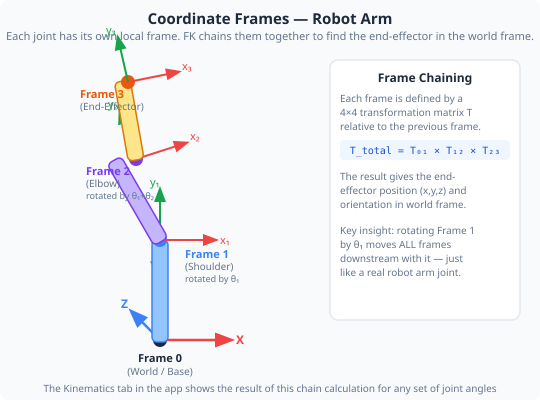
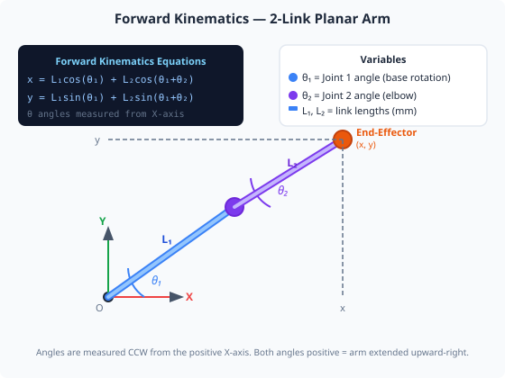
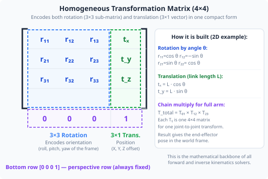

Duration: 3–4 hours · Prerequisites: Modules 1–4

To describe where the end effector is in space, we need a coordinate system. The standard is a right-hand Cartesian frame with three orthogonal axes:
The base frame is fixed at the robot's base (Joint 1). All positions are measured relative to this origin. The tool frame is attached to the end effector and moves with it.
Joint angles are useful for controlling motors, but a human operator (or a path planner) thinks in Cartesian terms: "move the end effector 50 mm to the right and 20 mm up." Kinematics converts between these two representations.


Forward kinematics (FK) answers the question: "Given the joint angles, where is the end effector?"
The calculation chains together the geometry of each link. For a simple 2-link planar arm (both joints rotating in the same plane, link lengths L₁ and L₂):
For a real 4–6 DOF arm like ours, the maths uses 4×4 transformation matrices — one per joint — multiplied together to get the final end-effector position and orientation. The application's kinematics engine does this calculation automatically.
A 4×4 homogeneous transformation matrix combines rotation and translation into one operation. The top-left 3×3 block describes rotation; the right-hand column describes translation (position).
Open the Kinematics tab. Set joint angles using the angle sliders (this does not move the physical arm). For each pose below, read the X, Y, Z position of the end effector shown at the bottom of the tab, and record it in the worksheet table.
For each pose, also look at the 4×4 transformation matrix displayed for the final joint in the chain. Identify: (a) the top-left 3×3 rotation block — its columns are the X, Y, and Z axes of the tool frame in the world frame; (b) the rightmost column (top 3 rows) — these are the X, Y, Z coordinates of the end effector.
With all joints at 0°, record the X, Y, Z values displayed. This is the arm's zero-angle position.
Using Joint Control, set only Joint 1 (base rotation) to 90°. Return to Kinematics. How did X and Y change? Did Z change? Record the values.
Reset Joint 1 to 0°. Now change only Joint 2 (shoulder) to 45°. Record the new X, Y, Z. Notice Z increases as the arm tilts upward.
Record results for at least 4 different joint angle combinations in the worksheet table. Try to find the combination that gives the maximum X (furthest reach forward) and the maximum Z (highest reach).
In the Kinematics tab, look at the transformation matrix displayed. Identify which column represents the tool's Z-axis direction (the direction the tool is pointing). Record the three values.
Open the 3D Visualisation tab (or pop it out as a separate window) and enable the End-Effector Trace overlay. As you change joint angles in the Kinematics tab sliders, the 3D view traces the path of the tool tip. Move through your five recorded poses and observe the Cartesian path — it should match the X, Y, Z coordinates recorded in your table.
| θ₁ (°) | θ₂ (°) | θ₃ (°) | θ₄ (°) | θ₅ (°) | θ₆ (°) | X (mm) | Y (mm) | Z (mm) |
|---|---|---|---|---|---|---|---|---|
Forward kinematics is the mathematical engine that makes Cartesian-space programming possible. Every time a robot is programmed to move to a specific X, Y, Z position rather than a specific set of joint angles, the control system is using kinematics — continuously, in real time.
The inverse problem (inverse kinematics — finding joint angles for a given Cartesian target) is far harder and often has multiple solutions or no solution at all. This is why the Kinematics tab is such a valuable learning tool: you can directly see the relationship between joint angles and Cartesian position, building the intuition needed to understand why IK solvers can struggle at workspace boundaries or in certain orientations.
For Module 8, you will explore how this mathematical model connects to the control strategies that drive the arm along smooth, predictable paths.
1. Forward kinematics calculates which of the following?
2. In a 4×4 homogeneous transformation matrix, what does the top-left 3×3 sub-matrix represent?
3. You rotate Joint 1 (base rotation, about Z-axis) from 0° to 180°. How does the end-effector Z coordinate change?